- Módulo: Sistemas Operativos
- Título del trabajo Ldap
- Componentes del grupo: Eliot Farrais García
- Curso Académico: 2014/2015
- Fecha de entrega: 4 de noviembre de 2014
Instalamos los paquetes libnss-ldap
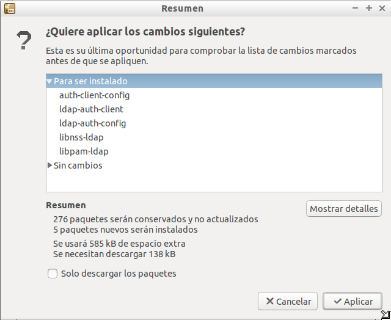Instalamos la libreria libpam-ldap
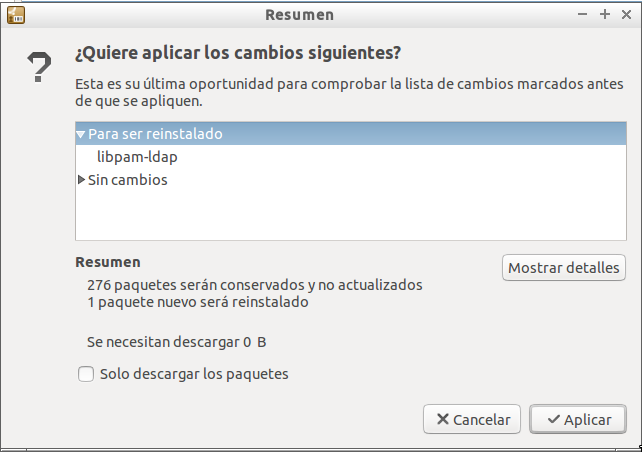Instalamos el paquee nscd
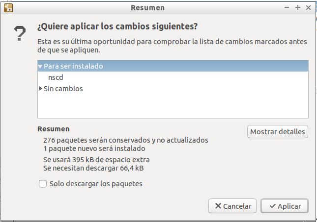Modificamos el archivo /etc/ldap.conf
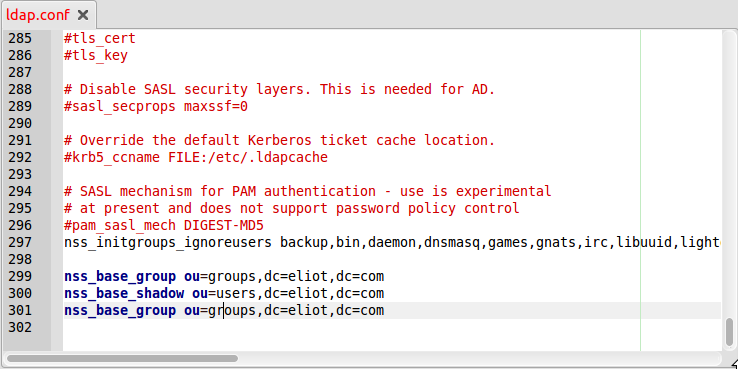Iniciamos el asistente de instalación de nuevo con el comando: dpkg-reconfigure ldap-auth-config
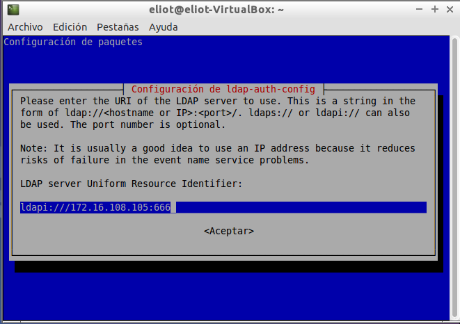Indicamos la URIo dirreción para acceder a ldap
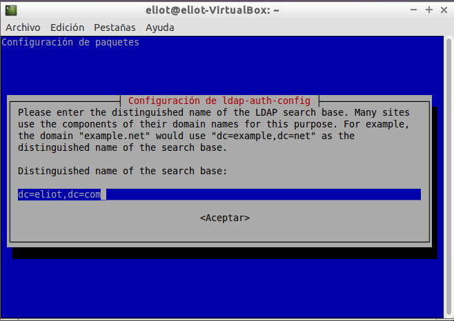Seleccionaos la versión de Ldap que estamos utilizando
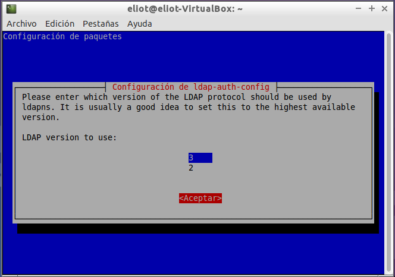Seleccionamos que si, para que se pueda cambiar las contraseñas del usuario del directorio más adelante
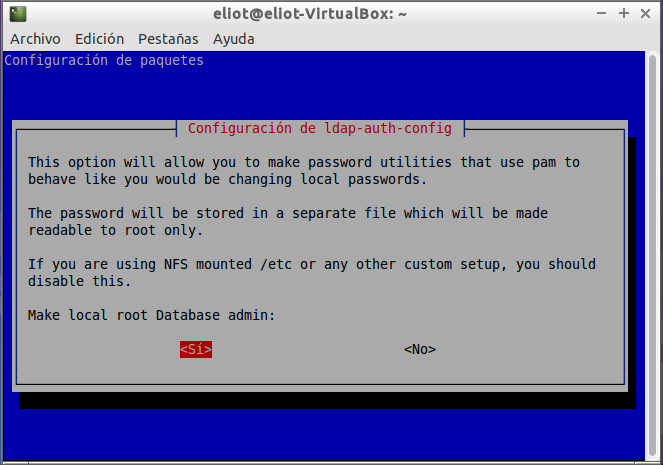Damos que no es necesario autentificarse para consultar el directorio LDAP
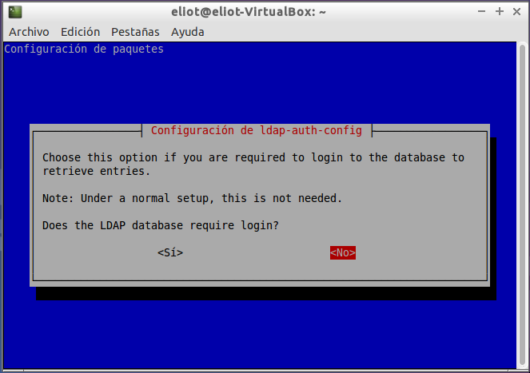Indicamos a cuenta de administrador del servidor LDAP
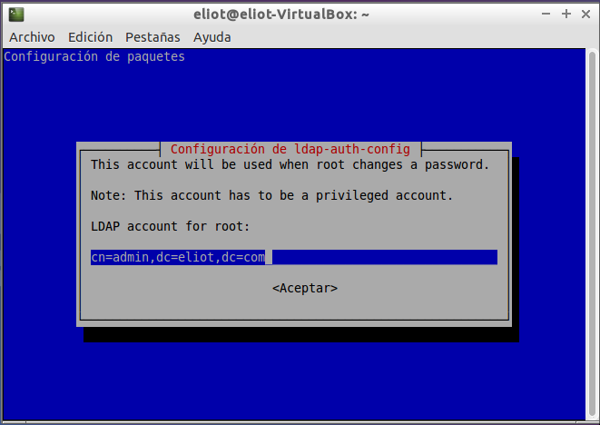Indicamos la contraseña de admin, que en nuestro caso es root
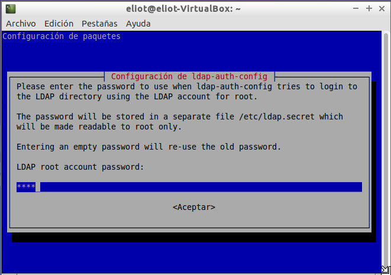Configuramos el archivo /etc/nsswitch.conf
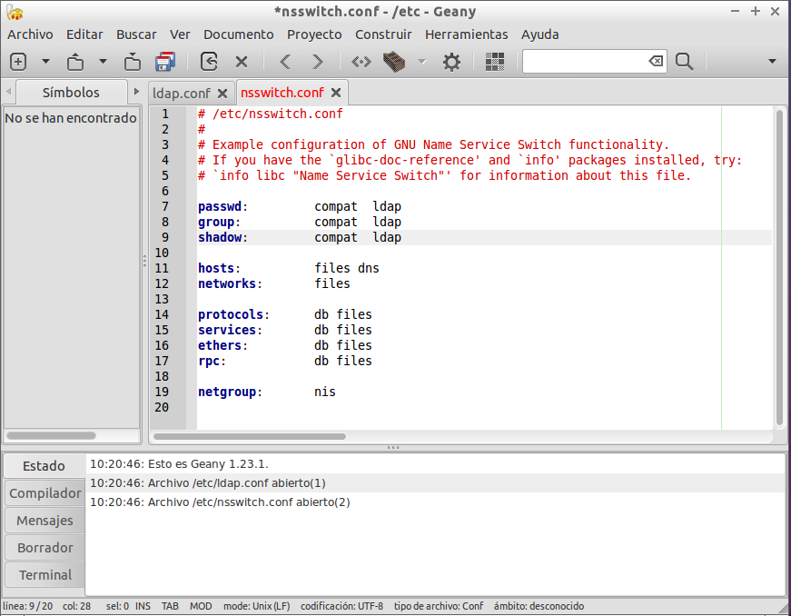Configuramos los archicos common-auth
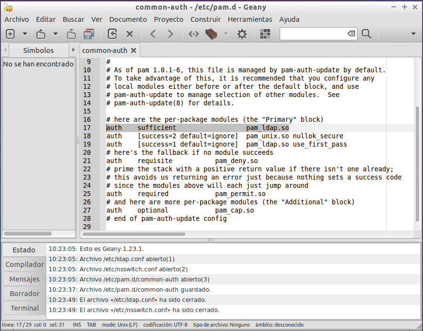Configuramos los archivos common-account
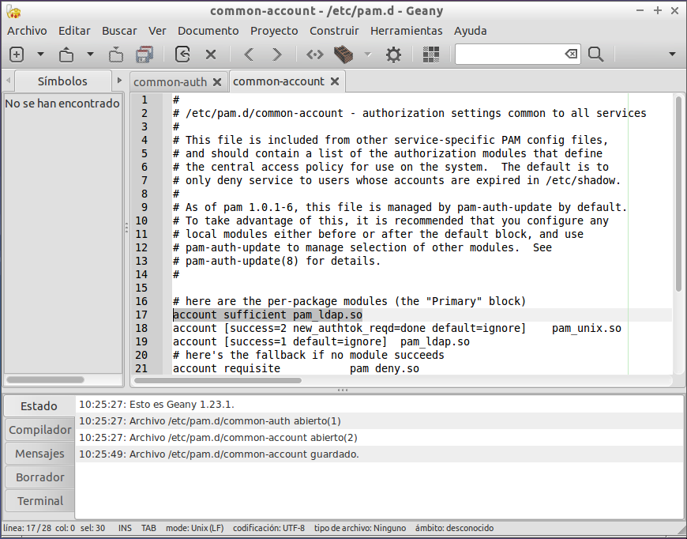Configuramos el archivo common-session
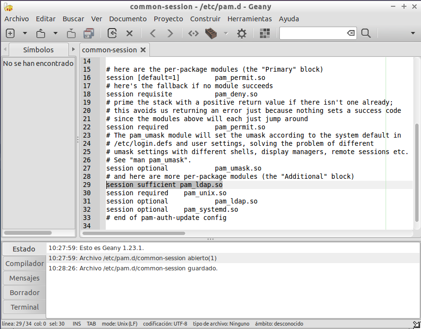Configuramos el archivo common-password
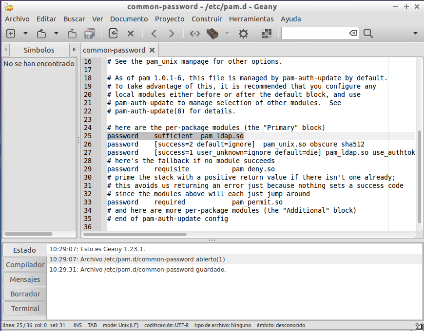Añadimos al final del fichero common-session las siguientes lineas

Descargaremos los paquetes "apache2", "libapache2-mod-php5", "php5-ldap" por Synaptic
Instalamos JRE desde synaptics